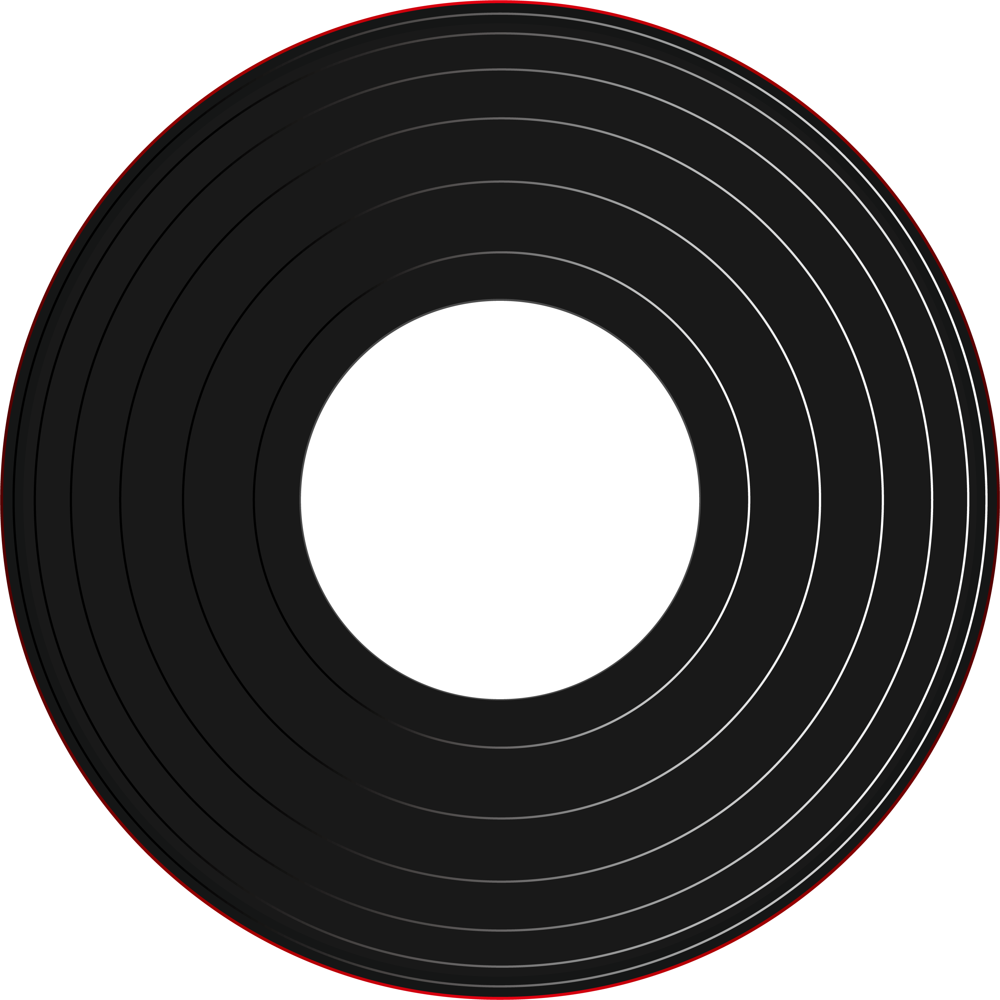
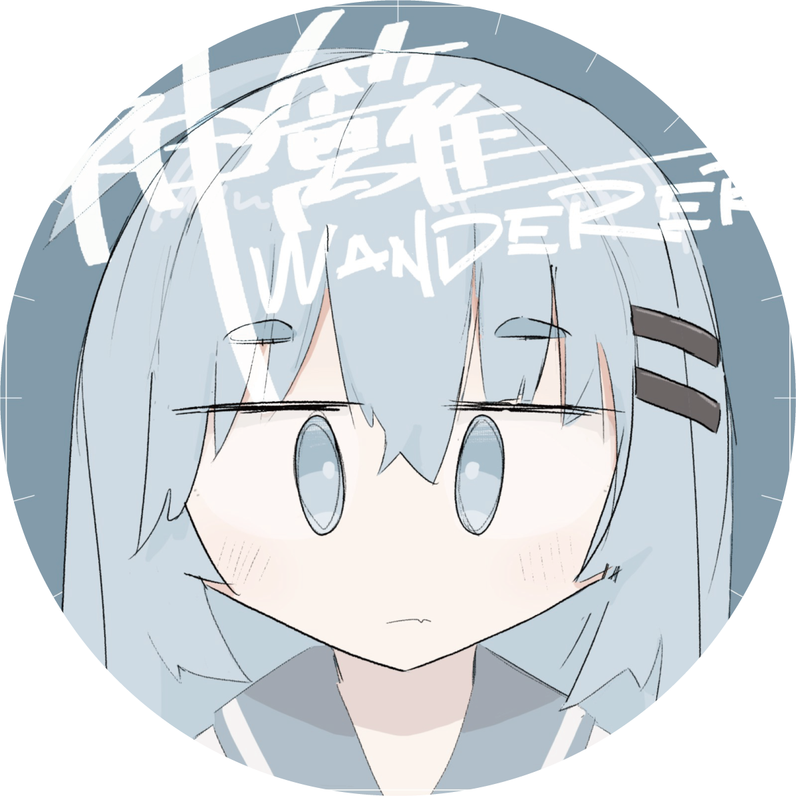

Where does the center of the record point to?
解答を確認
手がかり
手がかり #1
最初の出会いの場所を思い出してください。その建物の形には、大切なメッセージが隠されているかもしれません。
手がかり #2
回転する度に変化する色には、それぞれ意味があります。国旗の色が示す意味を考えてみましょう。
手がかり #3
流れる音楽には特別な意味が込められています。よく聴いてみると、何かのパターンが見えてくるかもしれません。
手がかり #4
一周にかかる時間は偶然ではありません。その数字の持つ意味を考えてみましょう。